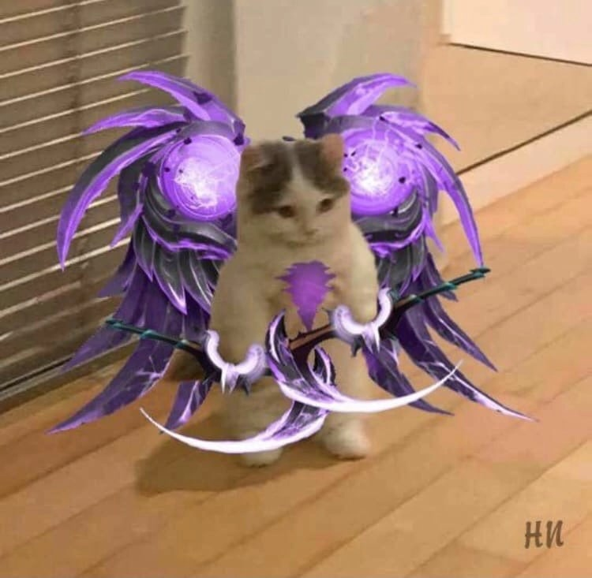

Привет, всем!

Всем привет меня зовут Никита.
Я учусь в 9 классе изучаю английский и програмирование.
Также я люблю играть в баскетбол
Также еще хожу на плавание
Также я люблю играт в компьютерные игры,
Моя любимая игра это Dota 2.
Я играю на разных позициях, но мои любимые
Это Мид, Керри, и Пос 4 саппорт
Я учусь в 9 классе изучаю английский и програмирование.
Также я люблю играть в баскетбол
Также еще хожу на плавание
Также я люблю играт в компьютерные игры,
Моя любимая игра это Dota 2.
Я играю на разных позициях, но мои любимые
Это Мид, Керри, и Пос 4 саппорт
Мои любимые песни!
Моя любимая игра!
Dota 2 — компьютерная многопользовательская командная игра в жанре multiplayer online battle arena,разработанная корпорацией Valve. Игра является продолжением DotA — пользовательской карты-модификации
для игры Warcraft III: Reign of Chaos и дополнения к ней Warcraft III: The Frozen Throne. Игра
изображает сражение на карте особого вида; в каждом матче участвуют две команды по пять игроков,
управляющих «героями» — персонажами с различными наборами способностей. Для победы в матче команда
должна уничтожить особый объект-«крепость», принадлежащий вражеской стороне, и защитить от уничтожения
собственную «крепость». Dota 2 работает по модели free-to-play с элементами микроплатежей.

О самой игре!
Dota 2 представляет собой многопользовательскую игру в жанре MOBA («многопользовательская онлайновая боеваяарена»), в которой сражаются две команды по пять игроков. В игре участвуют две команды по пять человек
Одна команда играет за светлую сторону, другая — за тёмную. Конечная цель каждого матча — уничтожить
вражескую «крепость», особый объект, принадлежащий противнику, и
защитить собственную крепость. Подобно Defense of the Ancients, Dota 2 использует управление с помощью
мыши и клавиатуры, схожее с управлением в стратегиях в реальном времени, и вид с расстояния, имитирующий
изометрическую проекцию